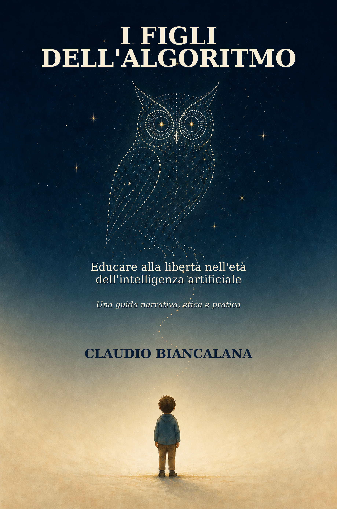
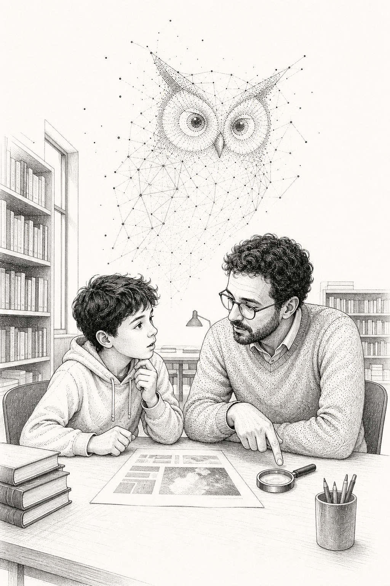
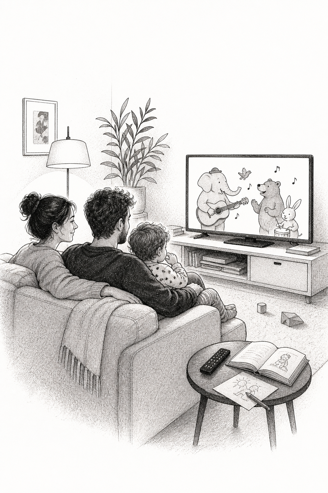

Il diritto di sbagliare lentamente
Non ogni errore va eliminato. Alcuni rendono visibile il modo in cui impariamo.
Un libro di Claudio Biancalana
Educare alla libertà nell'età dell'intelligenza artificiale.
Una guida narrativa, etica e pratica per chi non vuole scegliere tra entusiasmo ingenuo e paura del futuro.

cura / dubbio / libertà
educare, non delegare

È un assistente digitale. Risponde con garbo, non chiede ferie e sembra sapere tutto. Poi sbaglia nel momento meno opportuno.
Tommaso, Elena, Sara e Marco non sono eroi perfetti. Sono persone che provano a restare presenti quando la scorciatoia tecnica sembra più comoda del dubbio.
Le domande che il libro lascia aperteQuattro idee per abitare l'intelligenza artificiale senza lasciarle occupare tutto lo spazio.
Non ogni errore va eliminato. Alcuni rendono visibile il modo in cui impariamo.
Una macchina può informare e allenare. La responsabilità di esserci resta umana.
Le frasi più ordinate possono essere sbagliate. Le fonti vanno controllate, non ammirate.
La tecnologia non va subita né messa al bando. Va discussa, scelta e corretta insieme.
Una bussola pratica per le decisioni difficili.
Quale problema reale vogliamo risolvere?
Chi guadagna e chi rischia di restare indietro?
Chi può accorgersi di un errore e correggerlo?
Che cosa impariamo mentre usiamo lo strumento?
Il libro non offre ricette universali. Offre parole, scene e strumenti per far nascere conversazioni migliori.
Per chi vuole accompagnare figli e figlie senza proibizioni dettate dalla paura.
Per chi sa che imparare non equivale a consegnare una risposta perfetta.
Per chi progetta servizi e non vuole confondere efficienza, fiducia e responsabilità.
È una conversazione da non smettere di avere.
